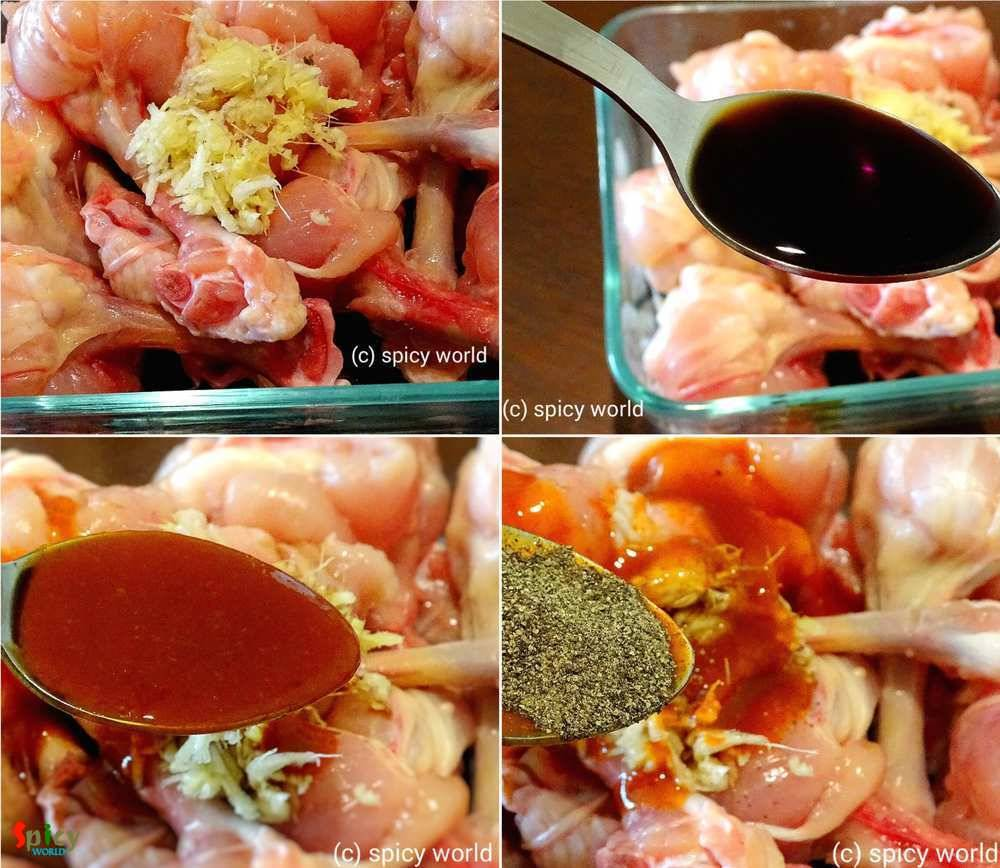
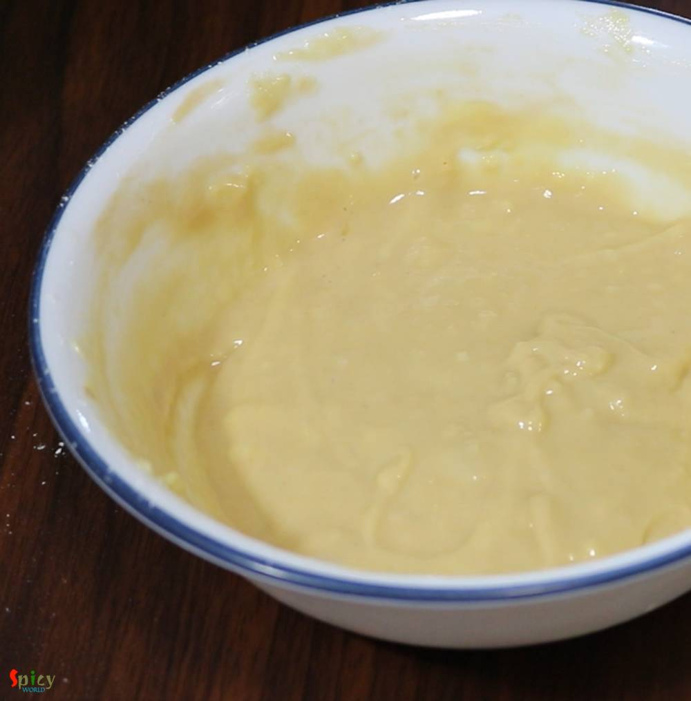

Simple and Easy Recipes
Chicken Lollipop
© 2016 Spicy World, Published on: Jan 11, 2019
Chicken Lollipop is one of the most frequently ordered starter item in Indian restaurants. Main trick here is to give chicken wings, lollipop shape. You can serve them after deep frying but trust me tossing the fried Chicken lollipops in spicy brown sauce will enhance the taste to another level. Do give this recipe a try and let me know how it turned out for you.

Ingredients
- Chicken wings (drummets) 12 pieces.
- 1 Tablespoon of ginger and garlic paste.
- 1 egg.
- 1 cup of Cornflour.
- 1 Teaspoon chopped ginger.
- 2 Teaspoons chopped garlic.
- 2 green chilies chopped.
- 2 Teaspoons black pepper powder.
- 3 Teaspoons dark soy sauce.
- 3 Tablespoons of red chili sauce (you can use chili garlic sauce also).
- 2 Teaspoons of tomato ketchup.
- 1 Tablespoon of vinegar.
- 4 Tablespoons of finely chopped capsicums and onion.
- Salt and sugar.
- 1/4th cup of hot water or chicken stock.
- Cooking oil for deep fry.
- Some chopped spring onion.


Steps
To make the lollipop you have to prepare the wings by turning the meat portion inside out.
First separate the flesh from the bone at the bottom portion.
Then scrape the flesh towards the top part with the help of your knife.
Lastly turn the meat portion inside out with the help of your hand. You will get the lollipop.

Now take a bowl, add the chicken pieces, ginger garlic paste, 1 Tablespoon red chili sauce, half of the soy sauce, vinegar, some salt and black pepper powder. Mix well.
Keep it aside for 2 hours.
In another bowl add cornflour, egg and half Teaspoon of salt. Mix well if the batter becomes very thick add 2 Teaspoons of water.
Then add the marinated chicken, mi x well.
Heat oil in a kadai. Drop 2-3 lollipops with batter in hot oil carefully.
Fry on medium flame for 5-6 minutes by changing the sides. Do not fry them in hurry as the inside will remain raw.
Then take them out from oil.
In another wok, heat 3 Tablespoons of oil (use the same in which we have fried the chicken).
Add chopped ginger, garlic and green chilies, saute for few seconds on high flame.
Then add chopped capsicums and onion, fry for 1 minute.
Add hot water, the remaining soy sauce, red chili sauce and tomato ketchup. Mix well for 1-2 minutes.
For the seasoning, add some salt and a pinch of sugar. Mix well.
Now add the fried chicken, mix well on high flame for 2-3 minutes.
Lastly add chopped spring onion and turn off the heat.
Your chicken lollipop is ready to serve.
Serve this hot with fried rice or drinks ...
")